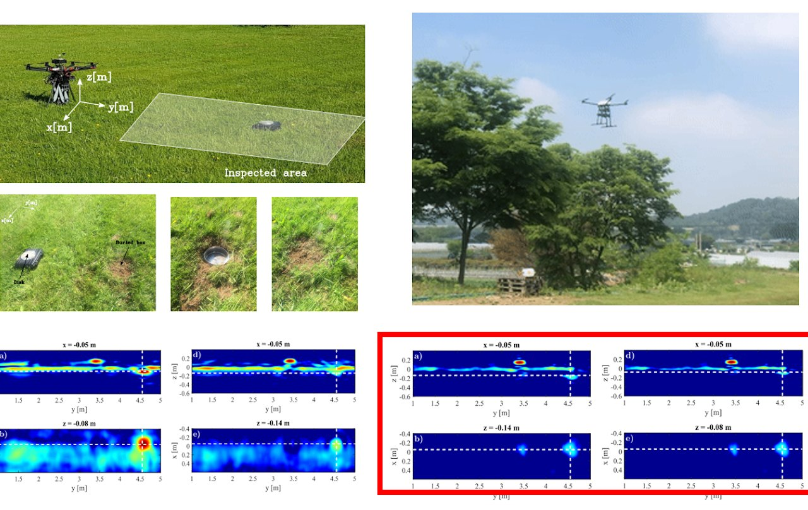
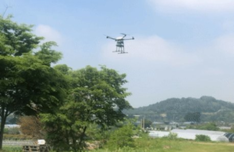
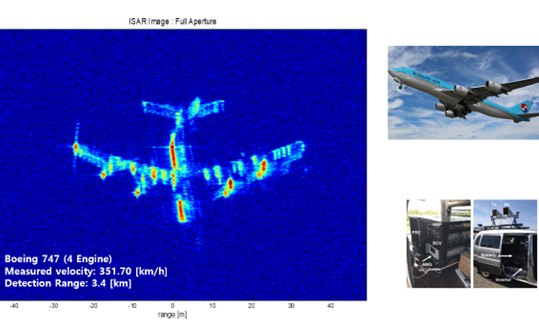

연구 분야
SAR 영상 레이다 시스템

개요
고품질 SAR 영상 레이다 및 신호처리 분야에서는 영상 레이다 구현 연구를 수행한다. 기존 시스템을 경량화하여 상업용 드론에 초소형 레이다를 사용한 SAR 영상 시스템을 구현하고, 드론 SAR 영상 탑재체를 활용하여 15cm 해상도의 지상 표적 영상을 생성한다. 또한 UWB 투과 레이다 탑재 드론을 이용하여 지표면에 매설된 표적을 탐지하고 식별하는 고해상도 영상 레이다 시스템을 구현하며, 지상 펄스 레이다를 사용한 초고해상도 ISAR 영상 생성 실험 및 신호처리 연구를 함께 수행한다.
세부 연구
드론 탑재 고해상도 SAR 영상 시스템
기존 시스템을 경량화하여 상업용 드론에 초소형 레이다를 사용한 SAR 영상 시스템을 구현한다. 드론 SAR 영상 탑재체를 활용하여 15cm 해상도의 지상 표적 영상을 생성한다.
드론 탑재 레이다 활용
UWB 투과 레이다 탑재 드론을 이용하여 지표면에 매설된 표적을 탐지하고 식별하는 고해상도 영상 레이다 시스템을 구현한다. 드론 기반의 고해상도 원격탐사 레이다 SAR 영상 데이터 획득 및 신호처리 시스템 구현 연구를 수행한다. 클러터 제거 알고리즘 및 SAR 영상 형성 알고리즘을 적용하여 드론 군집 주행에 필요한 실시간 정밀 충돌방지 레이다 시스템을 구현하고 실험을 수행한다.
UWB 투과 레이다 표적 탐지 연구
UWB 투과 레이다 탑재 드론을 이용하여 지표면에 묻힌 표적을 탐지한다. 클러터 제거 알고리즘 및 SAR 영상 형성 알고리즘을 적용하여 표적을 효과적으로 탐지한다.
ISAR 영상 획득
지상 펄스 레이다를 사용한 초고해상도 ISAR 영상 생성 실험 및 신호처리 연구를 수행한다.
관련 과제
- 급경사지 안전관리를 위한 드론 기반 SAR 모니터링 시스템 개발 (2025–2028)
- 콘크리트용 Near-field SAR 안테나 설계 및 클러터 제거 방법 개발 (2024)
- 드론 Swarm 및 Auto Landing을 위한 충돌방지 고도탐지용 임펄스 레이더 센서 개발 (2019–2022)
- 무인기기반 차세대 SAR 탑재체 (2019)
- 무인기 기반의 SAR 시스템 제작(2) (2015)
- 무인기 기반의 SAR 시스템 제작(1) (2014)
관련 논문
- Hybrid Deterministic Sensing Matrix for Compressed Drone SAR Imaging and Efficient Reconstruction of Subsurface Targets (2025)
- Design of Dual Polarized FMCW Radar System With Coupler Integrated Lens Antenna for Automotive SAR Application (2025)
- Compressive Sensing-Based SAR Image Reconstruction from Sparse Radar Sensor Data Acquisition in Automotive FMCW Radar System (2021)
- A low-sidelobe and wideband dual linearly polarized array antenna for UAV SAR application in X-band (2022)
- 적응형 압축센싱 기반의 드론 SAR 시스템을 이용한 저피탐 은폐물 탐지 (2021)
- 군집 비행 드론의 충돌 방지를 위한 UWB 레이다의 속도 감응형 CFAR 최적화 연구 (2021)
- 30 cm급 완전편파 데이터 획득을 위한 소형 SAR 시스템 개발 및 신호처리 (2018)
- Experimental operation of drone micro‐SAR with efficient time‐varying velocity compensation (2017)
- High Resolution Full-aperture ISAR Processing through Modified Doppler History based Motion Compensation (2017)
- 드론을 활용한 초소형 SAR 영상 구현 및 품질 보상 분석 (2016)
연구 사진·도식


